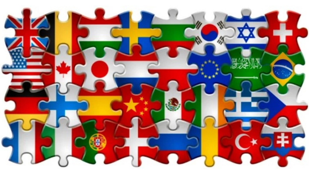

Inception of the 1st Jigsaw Puzzle International Convention (JPiC) to take place in Las Vegas, Nevada, in July 2022. LAS VEGAS, NV, UNITED STATES, September 22, 2021 /EINPresswire.com/ -- JPiC.club is proud to announce the inception of the 1st Jigsaw Puzzle International Convention (JPiC) that will be taking place in Las Vegas, Nevada, on July 8, 9 and 10, 2022 at the Las Vegas Convention Center.
Art & Fable Puzzle Co. will be exhibiting at JPiC and is sponsoring the convention. Alexandre Ouaknine, co-founder of JPiC, made the announcement in September "Marcia Durgin, Founder of Art & Fable, has been very supportive and we are proud to have A&F sponsor JPiC. The quality of A&F puzzles is legendary, just like JPiC intends to be. This will be the most prestigious and exclusive jigsaw puzzle event in the world. Don't be the missing piece!"